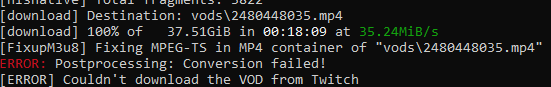

важно: читайте, пожалуйста, внимательно
также если собираетесь что то делать, прочитайте сначала до конца. спасибо :kiss:
для начала своего пути дата хординга понадобится:
vodtool - программа написаная мною для автоматического скачивания, разделения и заливки стримов в телегу
чтобы это сделать нужно:
переходим на ласт релиз водтула и скачиваем его (для винды файл vodtool-x86_64-windows.exe)
создаём отдельную папочку где будет находится вся вакханалия, и копируем туда exeшник
можете переименовать его в vodtool.exe (вам нужно будет вводить это название ручками)
водтулу нужна эта программа для скачивания записей чата стримов
переходим на ласт релиз и скачиваем TwitchDownloaderCLI-XXX-Windows-x64 (важно: именно CLI верися)
распаковывает архив, <!> переименовываем в ttvdl.exe и копируем рядом с экзешкой водтула
водтулу нужна эта программа для скачивания самих стримов
переходим на ласт релиз и скачиваем yt-dlp.exe
и копируем туда же (название оставьте yt-dlp.exe, если качали какую то другую версию то переименуйте)
водтулу нужна эта программа для разрезания стримов на куски
переходим на ласт релиз и скачиваем любой win64 релиз (он большой)
распаковываем ffmpeg.exe и ffprobe.exe из папки bin и тоже копируем в папку
должно получится как то так:
чтобы начать скачивать сами стримы больше не нужно делать ничего:
введите cmd в проводнике с открытой папкой, или если вы умненький откройте cmd через Win+R и перейдите в папку сами
имейте ввиду: всё взаимодействие с водтул - через коммандный интерфейс. ну не сделал я гуи, ну не нужно оно мне было.
для скачивания используется субкомманда download
введите vodtool download ССЫЛКА
или vodtool download -u АЙДИ ТВИЧ СТРИМА
пример: vodtool download https://www.twitch.tv/videos/2480448035
важно: иногда yt-dlp падает с вот такой ошибкой:
и оставляет после себя два файла вот так:
эту ошибку игнорируем, .temp.mp4 файл удаляем и запускаем комманду по новой, водтул сам разберётся
имейте ввиду: после скачивания во время разделения стрима прога нормально так лагает комп, это нормально, терпим, процесс не длинный
если в итоге вы увидели что то вроде этого:
то поздравляю, вы только что скачали свой первый стрим. скопируйте циферку в кавычках после UID, она вам понадобится чтобы работать именно с этим стримом в других коммандах
имейте ввиду: пока что водтул делит стрим на куски в чуть меньше чем два гига и это нельзя поменять
возможно в следующих версиях добавлю флаг чтобы поменять это, а пока можете скачать сурс и поменять цифру 2_000_000_000 в src/util.zig на что то своё
тут есть два стула: заливать руками или использовать субкоманду upload
тут всё просто: вводите комманду vodtool print-chapter-map UID СТРИМА, и оно вам выводит все сообщение, думать не нужно, просто копируем и вставляем
последнее - текст главного сообщения, всё до этого - подписи к файлам. они сохранены в vods/UID СТРИМА/ в папке с программой
не забудьте залить запись чата, она отдельным сообщением не выводится, файл vods/UID СТРИМА.json заливаете с подписью [запись чата] (ну или с любой другой с которой хотите)
upload
тут сложнее: в телеге левая шторка должна быть свернута в только иконки, открыт канал куда хотите залить
открываете консоль и телегу так, чтобы консоль была спереди, но телега была видна
фокусируете консоль, вводите vodtool upload UID СТРИМА --post и наводите курсор на телегу (не фокусируете), нажимаете на энтер (запускаете комманду)
водтул сам сфокусит телегу и будет заливать стрим по кускам.
также можно убирать и добавлять флаги к команде, вот их список:
--post - перед залитием кусков написать главный пост и перейти в комментарии--no-chat - не заливать чат--from-chunk НОМЕР КУСКА - начать заливать с определённого кускапримеры:
upload XXX --post - написать пост, перейти в комменты и залить стрим с записью чатаupload XXX --no-chat - залить стрим без записи чатаupload XXX --no-chat --from-chunk 4 - залить стрим без чата с 4 куска включительноу меня нету примеров, меня забанили в телеге(
итак, перво-наперво нужно раздобыть саму запись стрима. это можно делать на сайте streamrecorder (не платя деньги только 720p), через сторонние утилиты, от друга записавшего стрим во время прямого эфира, и т.д.
после того как нашли запись (обязательно в формате .mp4, можете погуглить как конвертировать через скачанный ранее ffmpeg) скопируйте её в папку vods которая создалась после первого запуска (или можете её сами создать)
если скачивали стрим со streamrecorder в сразу много кусков разных названий и категорий, воспользуйтесь например, этим гайдом по конвертации
после этого переименуйте её в более удобное имя (например kinoauk24.mp4).
создайте файл UID СТРИМА.cat.txt (например kinoauk24.cat.txt), и напишите его по этому шаблону:
2024-03-22 Крутой стрим который удалили с твича 324 Just Chatting 683 A Difficult Game About Climbing 923 Balatro
цифры перед категориями - их длинна в секундах (ну сами посчитаете, не тупые же), если категории неизвестны то оставьте только первую строку.
следом запустите эту комманду: vodtool categorize UID СТРИМА (например vodtool categorize kinoauk24)
дальше можете заливать стрим в телегу по гайду выше (UID стрима в этом случае - название записи без расширения)
хорошая практика: если будете заливать стрим в более низком качестве чем сурс - как нибудь подписывайте его
пока никак :)
да хоть папку vods целиком
неа, но я сейчас немного его перерабатываю чтобы можно было просто скопировать его и начать вставлять ссылки на другие каналы, когда доделаю - обновлю эту часть гайда. кстати - если будете заливать стримы лёхи, то не удалять мои залитые стримы, а просто дополнять с другими ссылками для целостности архива :^)
спасибо всем за поддержку на всём пути oleshavods. без вас я не знаю что бы делал.
если что то непонятно - не стесняйтесь писать мне в телегу (пока нема, жду номер)
если действительно будете заливать стримы, начинайте с тех что я не залил последними, чтобы сохранить целостноть архива
а еще если будете что то заливать, можете мне скинуть, мы порекламим, могу даже дать пару советов если чо, да и мне самому просто интересно :)
спасибо всем кто решит продолжить моё дело, это правда много для меня значит